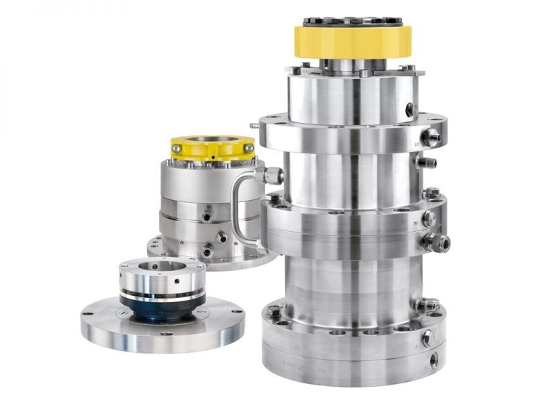
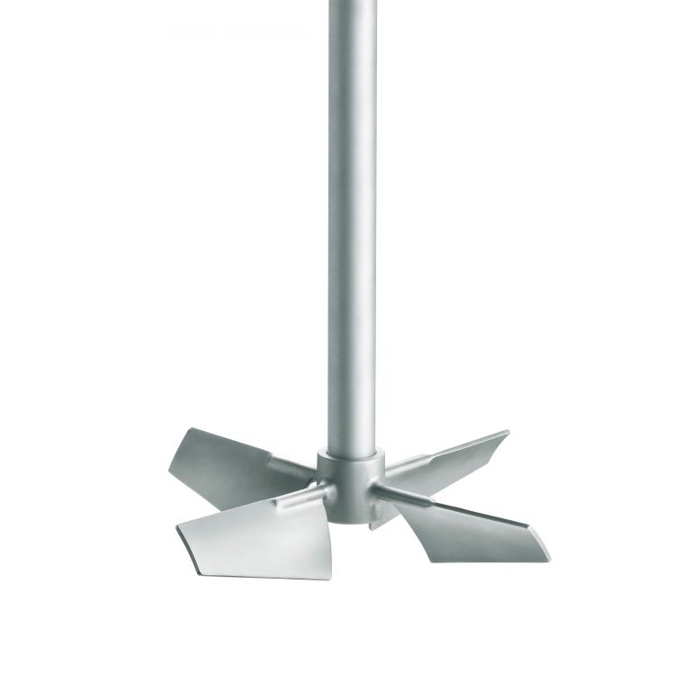
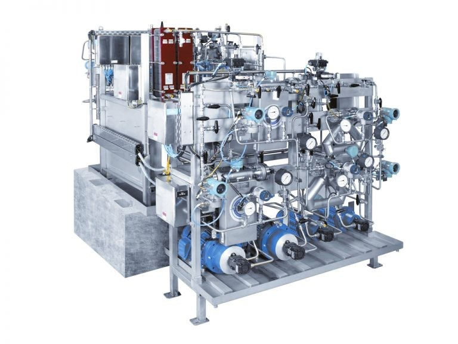
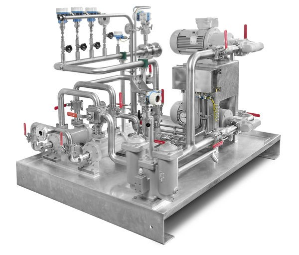

01Mechanical seals
Seal chamber pressure is controlled above vessel pressure for separation. EKATO tests sealing systems and can record operating data before delivery.
Mixing / process plants / seals
EKATO develops and manufactures agitator technology, engineered mixing systems, and sealing systems. Its range covers small standardized industrial agitators through large reactor systems and complete process plants.

Systems for homogenization, suspension, dispersion, gassing, and heat supply or removal. The supplied brochure describes standardized agitators, engineered reactor systems, and complete process plants.
| Model | Application | Motor power | Shaft diameter | Operating pressure |
|---|---|---|---|---|
| HWL-N | Reactor agitators | 5–3,500 kW | 40–500 mm | Vacuum–200 bar |
| EM | Industrial agitators | 0.75–75 kW | 40–120 mm | Vacuum–12 bar |
| FD / KD / HWL-A | Compact agitators | 0.75–400 kW | 40–800 mm | Atmospheric–4 bar |
| FGL | Small-volume agitators | 0.37–7.5 kW | 25–40 mm | Vacuum–7 bar |
| MD / SD | Allrounder agitators | 0.37–7.5 kW | 25–40 mm | Atmospheric |
| KOAX | Coaxial agitators | 5–250 kW | 40–220 mm | Vacuum–40 bar |
| ES | Side-entry agitators | 0.75–37 kW | 40–80 mm | Atmospheric–7 bar |
| ES-V | Storage tank side-entry agitators | 1.1–15 kW | 40–60 mm | Atmospheric–3 bar |
| HWL | FGD side-entry agitators | 3–90 kW | 40–120 mm | Atmospheric–7 bar |
| ESM | Magnetic safety agitators | 5–200 kW | 40–100 mm | Vacuum–100 bar |
Published ranges are selection guidance; final configuration and operating limits depend on the application.
Read the agitator and process plant brochure PDF ↗Impeller design, arrangement, flow direction, and viscosity regime influence both process performance and mechanical behaviour.

EKATO mechanical seals are adapted to pressure, temperature, speed, and the customer’s application. The supplied material covers single-, double-, and triple-acting designs with dry, gas, or liquid lubrication.

01Seal chamber pressure is controlled above vessel pressure for separation. EKATO tests sealing systems and can record operating data before delivery.

02Pressure maintenance, emergency liquid supply, cooling, and flushing support reliable seal operation.

03Mounted or separate systems with duplex filters, heat exchangers, cooling, thermostatic valves, pressure gauges, DCS instrumentation, and oil collection trays.
The supplied EKATO brochure also lists hydrogenation plants, pilot plants, and industrial photoreactors. Contact MTSI to discuss the process and configuration.
Send your operating duty, equipment details, or spare-part reference to MTSI.
EMAIL MTSI ↗